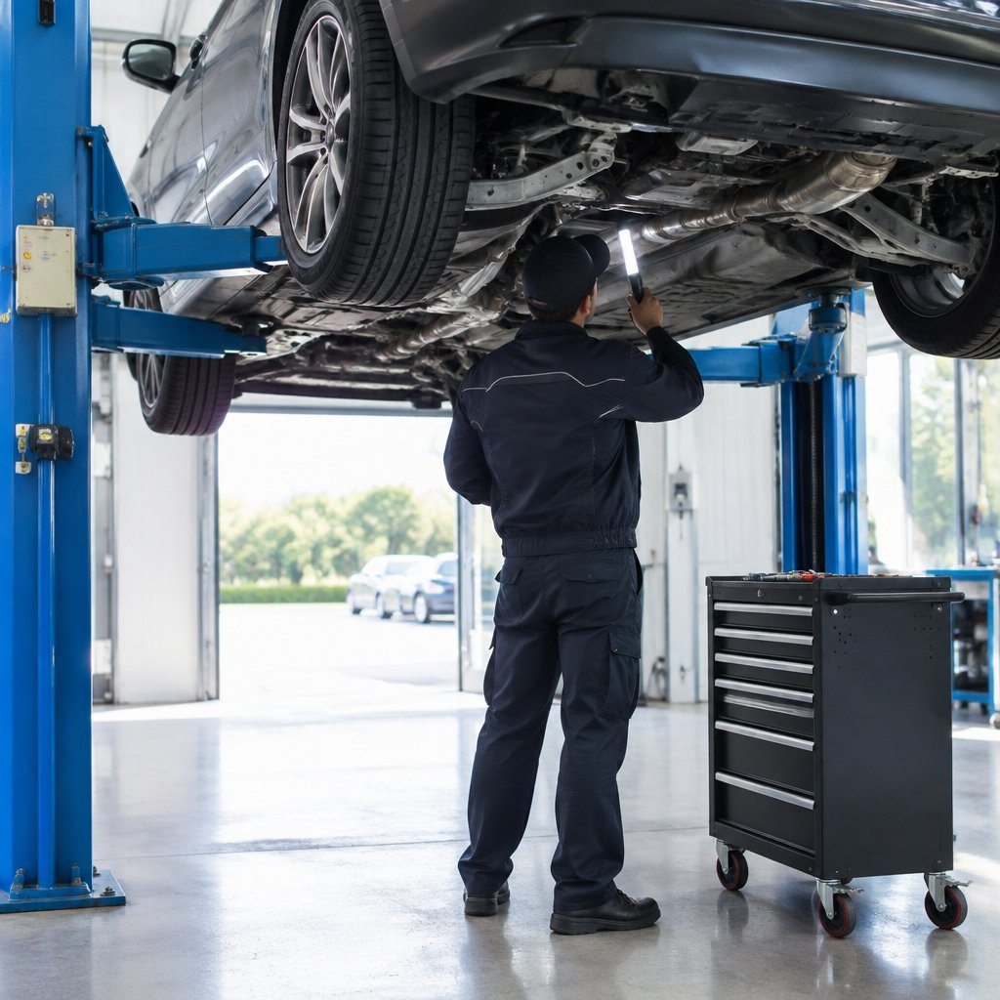
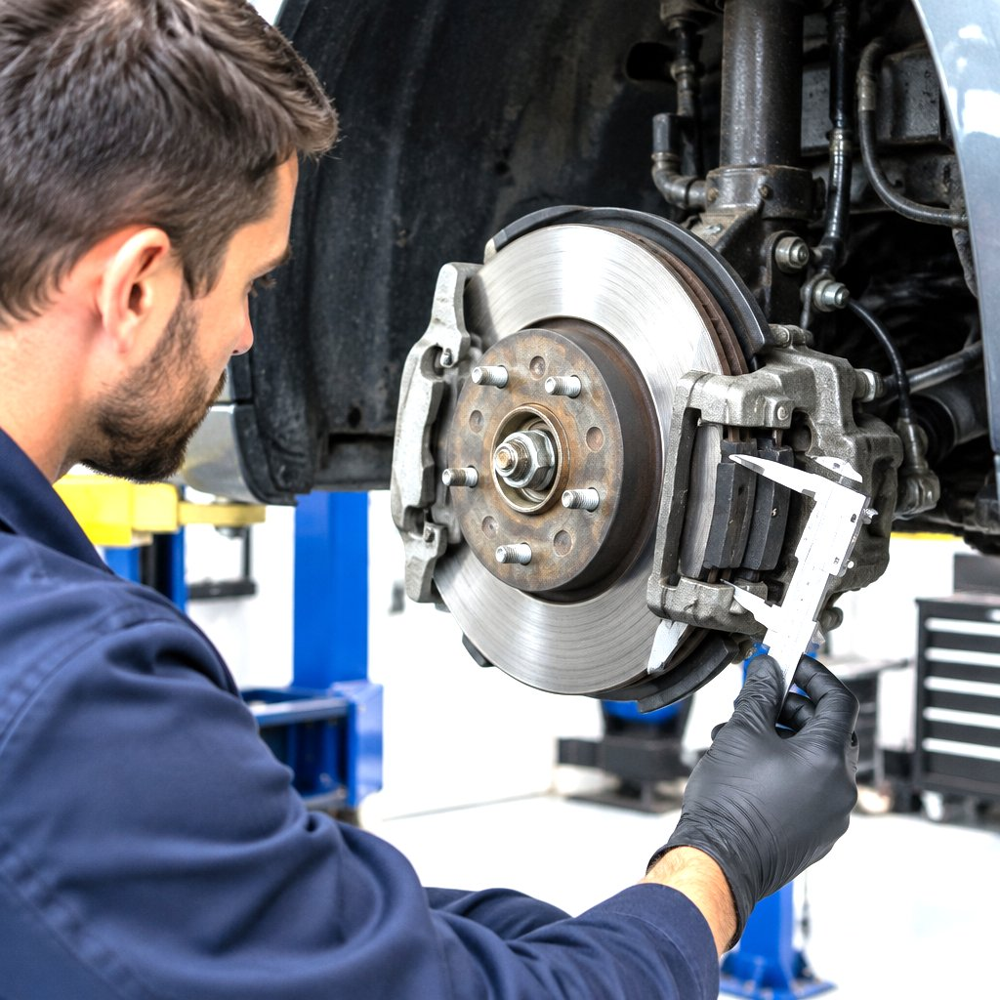

Смотрим машину на подъёмнике и через сканер: ошибки, живые параметры, люфты, износ колодок и дисков, состояние жидкостей. Всё, что нашли, записываем в протокол — чтобы вы решали, а не догадывались.
Бесплатная диагностика для клиентов, которые ремонтируются у нас
Нажмите на направление: покажу, что именно смотрим, сколько это занимает и что вы получите на руки.
Слева — десять направлений. Нажмите на нужное, и я покажу, что именно проверяем, сколько это занимает и что вы получите на руки.
Ошибка в блоке часто лишь следствие. Мы смотрим механику руками, а электронику — по живым параметрам, и только потом называем причину.
Всё найденное фиксируем: что в норме, что на подходе, что требует ремонта сейчас. С этим списком можно ехать в любой сервис.
Люфты, толщина колодок и дисков, состояние жидкостей — измеряем, а не оцениваем на глаз.
Работаем с дизельными моторами и коммерческим транспортом: DAF, MAN, Scania — тоже в списке марок.
Диагностика отдельная услуга. Сказать «спасибо, подумаю» — нормальный вариант.
Если машина битая или с сюрпризами, лучше узнать это до денег. Проверяем кузов толщиномером, читаем блоки, смотрим технику и пробег.

Письменный вывод: брать, торговаться или отказаться. С конкретными аргументами — «диски под замену, колодки 30%, ошибок нет, кузов крашен по левому крылу». Этого хватает, чтобы сбить цену или спокойно уйти.
Список не для галочки: под каждую марку есть свой сканер и типовые болячки, которые мы знаем.
Такой марки в списке нет — напишите, уточним по телефону.
Приём по записи, чтобы машина не ждала в очереди, а вы — в коридоре.
Звонок или WhatsApp: марка, модель, что беспокоит. Подбираем время.
Машина на подъёмник, сканер в разъём. Смотрим и то, что болит, и то, что рядом.
Список: норма, на подходе, менять сейчас. Объясняем, что критично, а что подождёт.
Ремонтируем у нас — диагностика бесплатна. Или забираете список и едете к своему мастеру.
Если вопроса нет в списке — позвоните, ответим без записи.
Скажите марку, модель и что беспокоит. Подберём время и заранее скажем, сколько это займёт и сколько будет стоить.